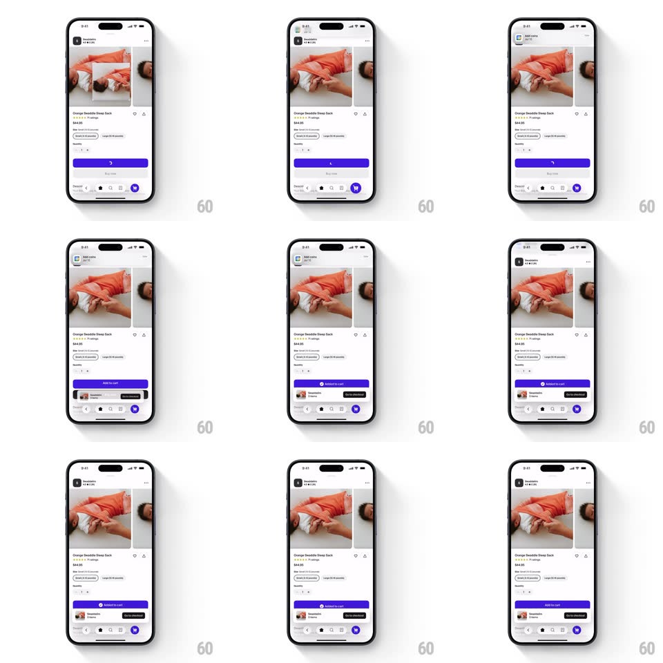

Media
Frame-by-frame

Rebuild this interaction 1:1: Shop's add-to-cart - on tap, the product image thumbnail scales down and flies in an arc into the bottom cart icon while an "Added to cart" toast with a checkout action slides up.

Rebuild this interaction 1:1: Shop's add-to-cart - on tap, the product image thumbnail scales down and flies in an arc into the bottom cart icon while an "Added to cart" toast with a checkout action slides up. ## Integration Integration: stack-agnostic spec - springs given as stiffness/damping, timed motions as duration + curve; map every value to your framework and animation library of choice. ## Scene A Shop product page (image carousel, title, price, size selector, ADD TO CART button, bottom tab bar with a cart icon); the success state swaps the button to "Added to cart" and raises a toast (product thumbnail, label, CHECKOUT button) above the tab bar. ## Motion spec Pattern: fly-to-cart arc + toast slide-up, ~800ms. - Tap: the button shows a brief inline spinner (300ms) while a copy of the product image spawns at the carousel. - Flight: the image copy scales down (1 -> 0.12) and follows a curved bezier path to the cart icon (500ms, ease-in) - arcing down toward the tab bar. - Land: the cart icon pops (scale 1 -> 1.3 -> 1, spring ~420/16) and its badge count increments with a flip (150ms). - Button: morphs to "Added to cart" with a check (label crossfade + check scale-in, 200ms). - Toast: slides up from behind the tab bar (spring ~340/24, 350ms) as the image lands; it auto-dismisses down after ~3s (or when CHECKOUT is tapped). ## Calibration - The flying image is a copy - the carousel image never leaves its place. - The cart pop fires exactly when the flying image reaches the icon. ## Reduced motion Skip the flight; badge increments with the button state change. ## Don't miss - The arc curves toward the cart's actual position in the tab bar. - Toast and flight overlap - the toast starts rising as the image lands, not after.